Profile

Dr. Parvez Ahmed Shaikh is a distinguished senior public health professional and healthcare executive with over 32 years of public service. As the Director General Health Services Sindh (BPS-20), he serves as the apex public health authority for Sindh Province, holding direct administrative command, strategic governance, and overall operational oversight over a public healthcare delivery system safeguarding 56 million citizens. Holding MBBS, MCPS, and MSPH qualifications, he combines rigorous clinical grounding with high-level expertise in public health management, health policy, epidemiology, pandemic preparedness, large-scale administration, monitoring & evaluation (M&E), and evidence-based strategic planning across senior provincial leadership roles and major district health facilities.
Central to his leadership legacy is his role in provincial policy formulation and health sector reform. Dr. Shaikh actively shapes, enacts, and aligns provincial health policies with national priorities and Sustainable Development Goals (SDGs). He spearheads strategic legislative proposals, regulatory frameworks, health equity initiatives, and operational guidelines that optimize healthcare access and strengthen system resiliency across urban and rural districts alike. In parallel, he provides comprehensive executive direction across all core vertical programs, including the Expanded Program on Immunization (EPI), Tuberculosis (TB) Control, Hepatitis Elimination, Reproductive, Maternal, Newborn, and Child Health (RMNCH/MNCH), Communicable Disease Control (CDC), Health Education, Non-Communicable Diseases (NCDs), and overall Procurement, Admin & Accounts (PA&A).
Dr. Shaikh commands a vast executive workforce comprising Deputy Directors General, Divisional Directors, District Health Officers (DHOs), and Medical Superintendents (MSs). In this capacity, he directs human resource planning, province-wide capacity building, continuous professional training, and high-level talent selection via executive scrutiny committees while managing multi-million-dollar public health portfolios with rigorous financial governance, he also drives strategic international donor collaborations, spearheads Integrated Disease Surveillance and Response (IDSR) rollouts and leads high-stakes emergency and epidemic responses to fortify public health defense mechanisms throughout the province.
Latest Activities
Highlights and coverage of recent public health initiatives, strategic briefings, and official engagements.
Education & Professional Development
- MBBS – Sindh Medical College
- DCH & MCPS- Pediatrics Training – National Institute of Child Health (NICH)
- MSPH (Master of Science in Public Health) – Health Services Academy (HSA)
- Regional Leadership Fellow – Johns Hopkins Bloomberg School of Public Health
Meetings & Official Engagements
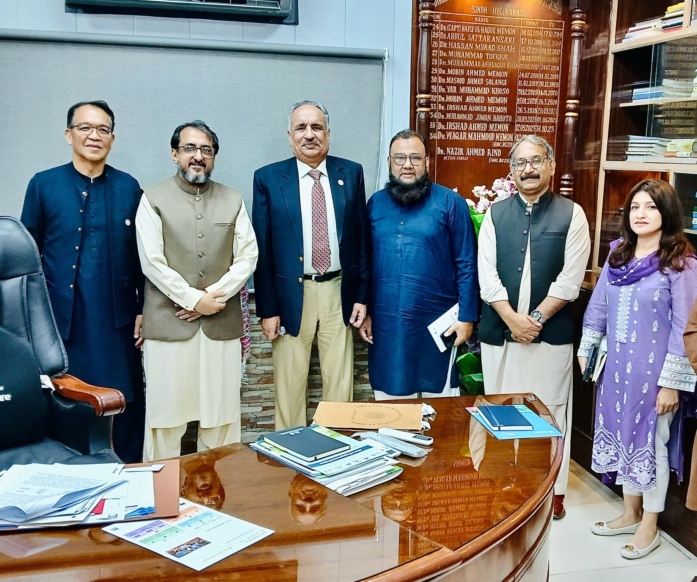
UN FAO One Health Collaboration
Team Lead United Nations FAO Mr Pawin Padungtong met Director General Health Dr Parvez Ahmed Shaikh to strengthen multi-sectoral coordination between human health and veterinary sectors under the One Health framework.
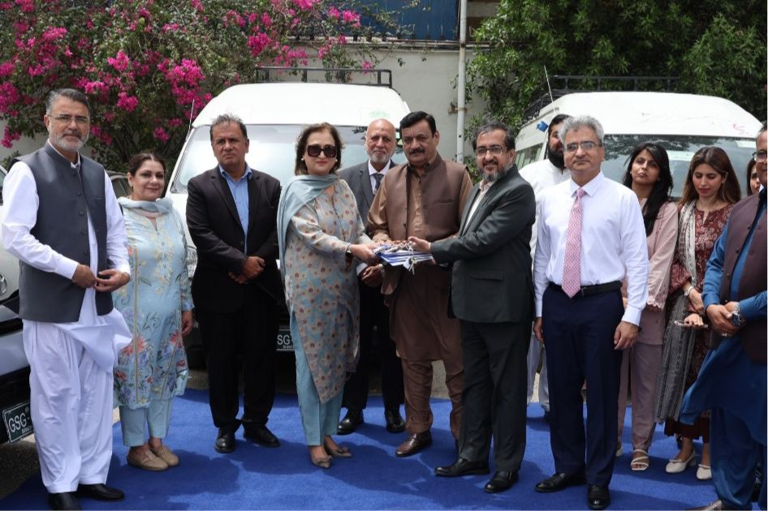
Mobile TB Vans Handover
Dr Parvez Ahmed Shaikh received multiple mobile TB Vans for active TB case findings from JSI and Government of United States of America led by Country Director JSI Dr. Nabeela Ali.
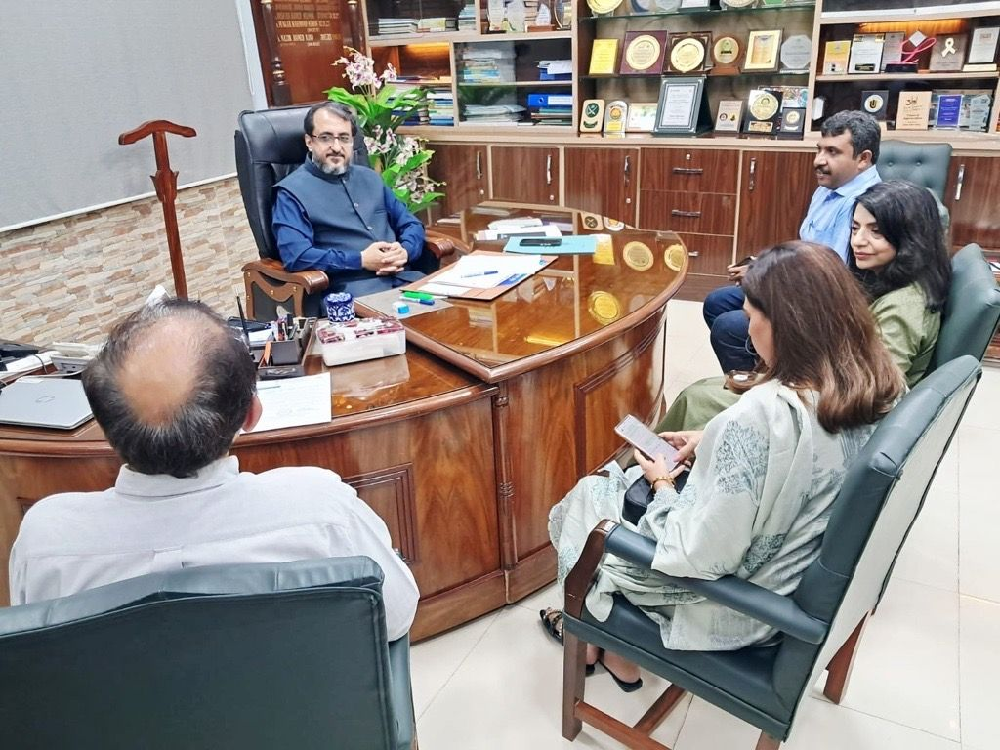
JHPIEGO Executive Meeting
Country Director JHPIEGO Dr. Aminah Khan visited and met Director General Health Dr Parvez Ahmed Shaikh at his office in Hyderabad.

IRD Global Strategic Engagement
Country Director IRD Global Mr. Zaid Bin Rashid alongwith his delegation visited DG Health Office at Hyderabad & met Dr Parvez Ahmed Shaikh.
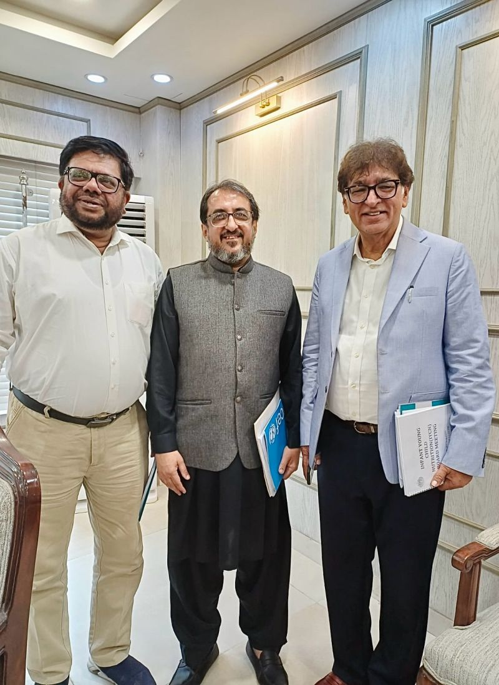
IYCN 2nd Board Meeting
DG Health Dr Parvez attended 2nd Board Meeting of IYCN on a kind invitation of Executive Director SICHN Dr Jamal Raza.
Public Accounts Committee Session
DG Health Dr Parvez Ahmed Shaikh attended Public Accounts Committee of Provincial Assembly of Sindh under chairmanship of Mr. Nisar Ahmed Khuhro.
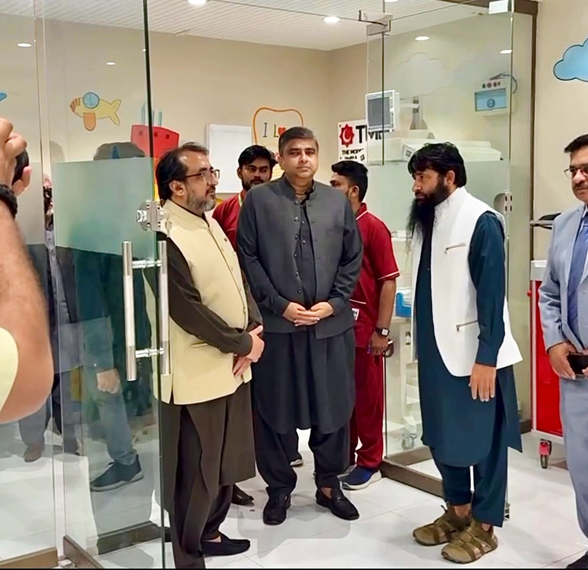
Healthcare Inspection with Secretary Health
DG Health Dr Parvez Ahmed Shaikh accompanied Secretary Health Mr. Tahir Hussain Sangi & visited ‘The Modern Hospital’.
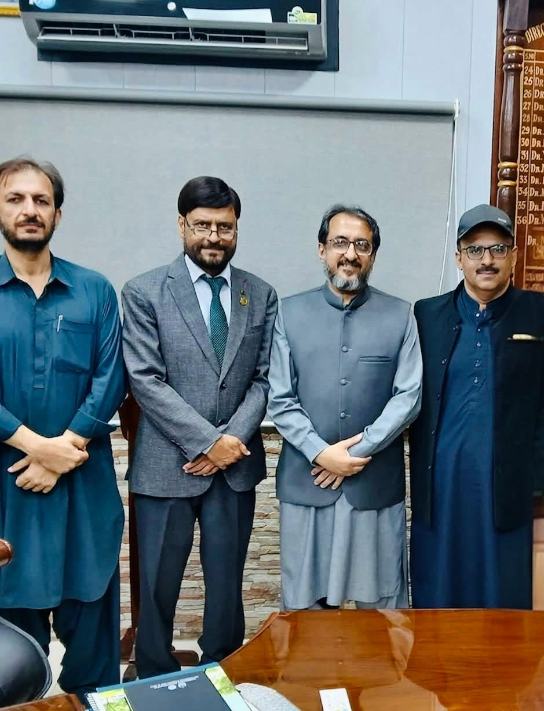
Sindh Healthcare Commission Consultation
CEO Sindh Healthcare Commission Dr Ahson Qavi Siddiqui visited and met DG Health Sindh Dr Parvez Ahmed Shaikh at his office.

Antimicrobial Resistance Action Plan
Developed Provincial Action Plan for 'Antimicrobial Resistance' in Sindh with UK Department of Health & Social Care.

UNICEF Leadership Meeting
Collaborative meeting with CFO Unicef Pakistan Dr. Prem B Chand at UNICEF office Karachi.

Ministerial Consultation
Introductory meeting with Minister Health & Population Welfare Dr. Azra Fazal Pechuho.
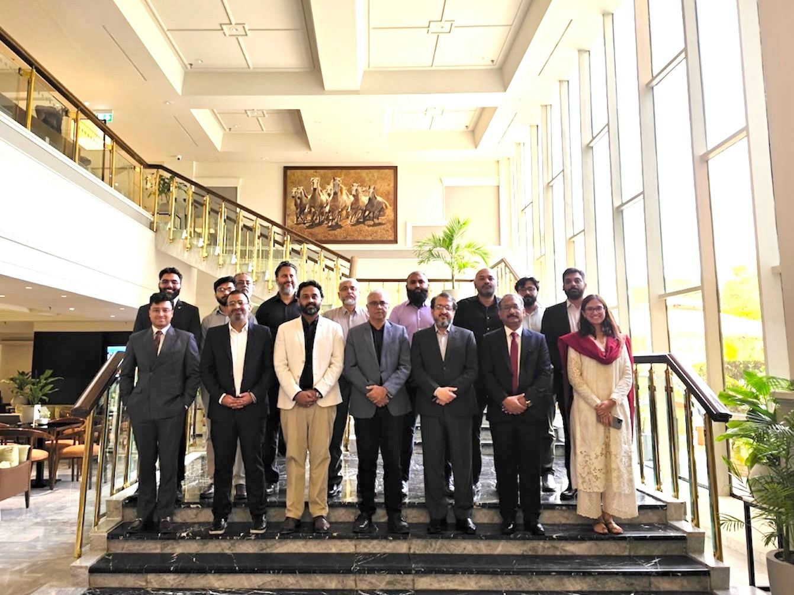
National Digital Health Strategy
Developed National Digital Sectoral Plan for Healthcare System with Pakistan Digital Authority.
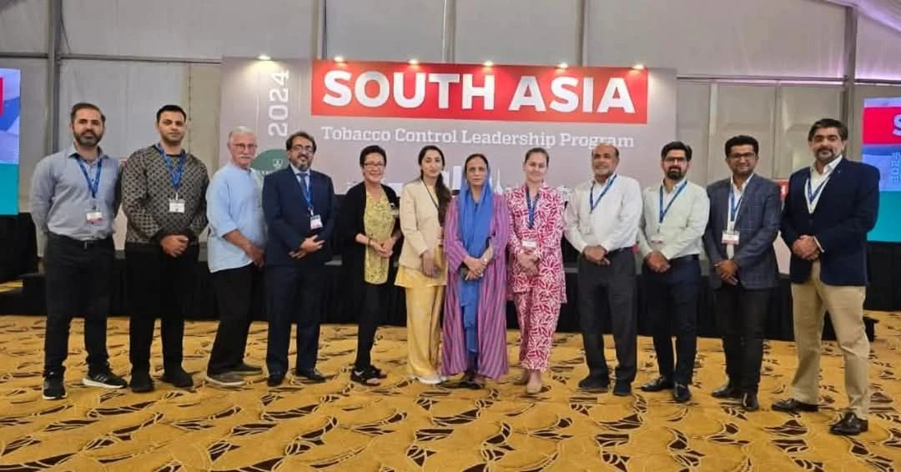
South Asia Regional Leadership Program
Represented Sindh at the South Asia Regional Leadership Program in Sri Lanka.

Health Services Academy Leadership
Met Vice Chancellor HSA Dr Shahzad Khan at Islamabad.
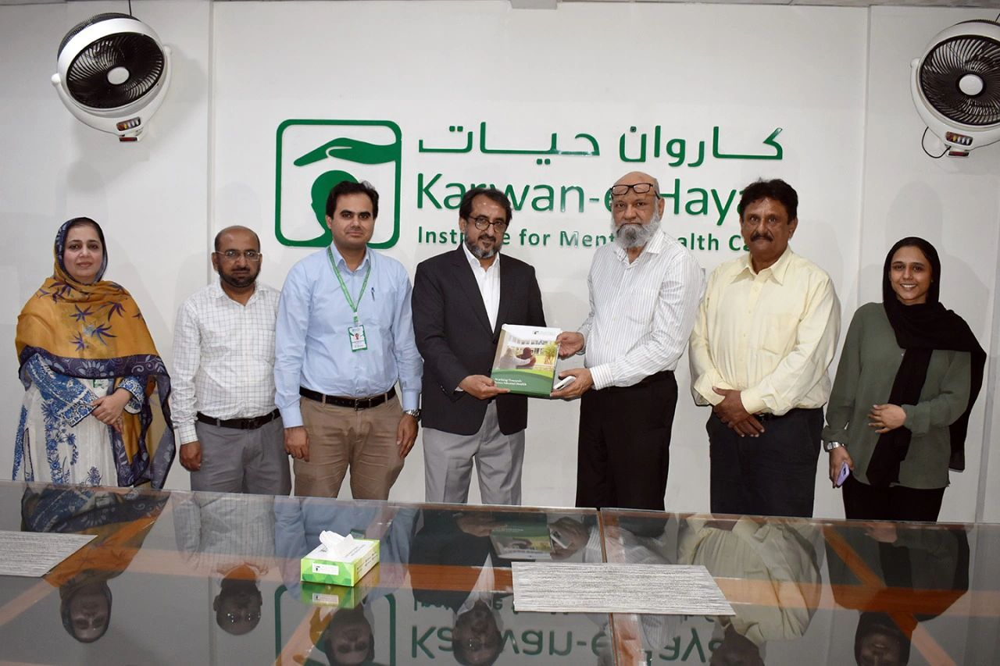
Mental Healthcare Infrastructure
Visited Karwane Hayat Institute in Karachi.
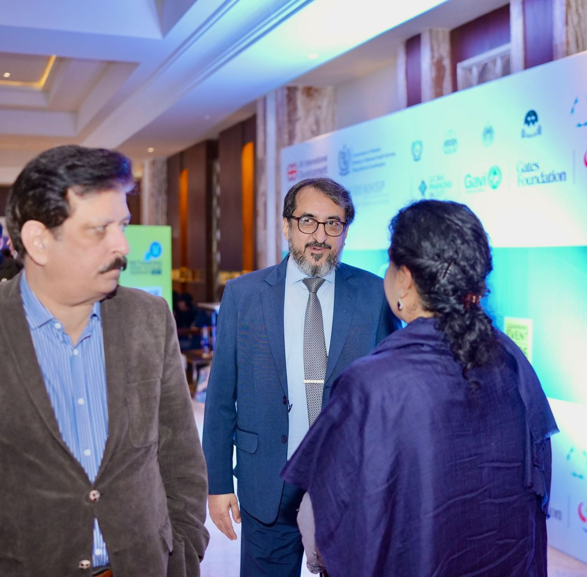
British High Commission Consultation
Invited by British High Commission for Universal Health Coverage.

Universal Health Coverage Engagement
Invited by British High Commission for Universal Health Coverage.
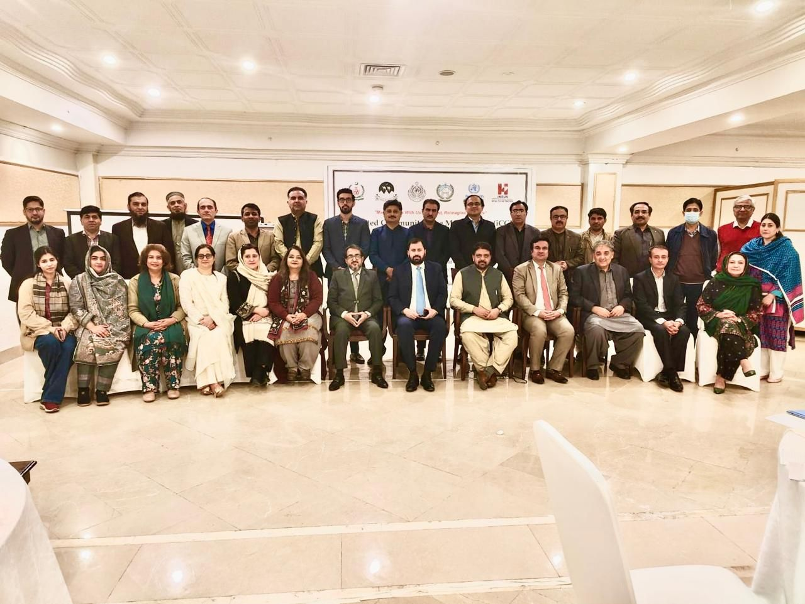
Integrated Community Case Management
Attended Integrated Community Case Management.

Sindh Health Policy Formulation
Constituted Sindh Health Policy 2026-2035.

COVID-19 Pandemic Response
Worked with DG (C) Maj Gen Kashif Azad in COVID Pandemic.

Federal Healthcare Consultation
Met Federal Minister for National Health Mr Mustafa Kamal.
Honors & Awards

IDSR Implementation Award
UK Department of Health & UK Health Security Agency awarded DG Health Sindh Dr Parvez Ahmed Shaikh for his extraordinary role in implementing IDSR in Sindh.

Family Physicians Gold Medal
Awarded Gold Medal by Family Physicians in recognition of outstanding contributions to the healthcare system.
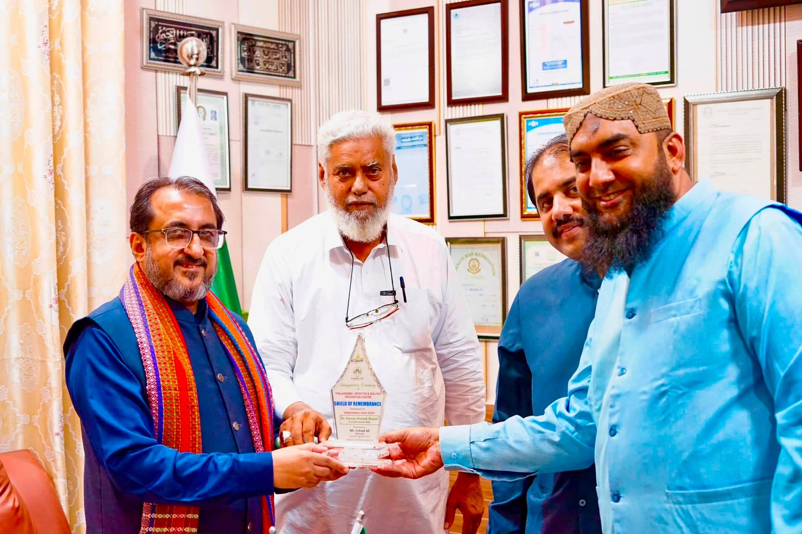
Civil Society Healthcare Recognition
Awarded by Civil Society of Hyderabad for exceptional contributions toward Thalassemia, Hemophilia, and Dialysis prevention.

COVID-19 Frontline Management Award
Honored with SMBB Shield for outstanding leadership in COVID-19 frontline health management in Sindh.
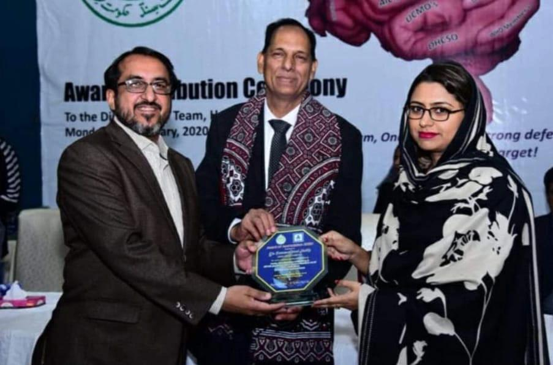
Pandemic Public Health Leadership
Recognized for active public health management and strategic leadership during the COVID-19 pandemic.
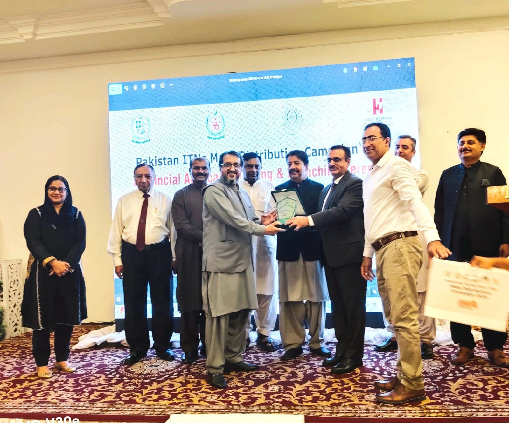
Vector Borne Disease Control Shield
Awarded shield by Vector Borne Disease Department for exemplary role in combatting vector-borne diseases in Sindh.
Official Gallery
Contact & Office Address
Office: Directorate General Health Services Sindh
Location: Hyderabad, Sindh, Pakistan
Email: drparvez68@gmail.com